作者：Hawstein
出处：http://hawstein.com/posts/make-thiner-programming-pearls.html
声明：本文采用以下协议进行授权： 自由转载-非商用-非衍生-保持署名|Creative Commons BY-NC-ND 3.0 ，转载请注明作者及出处。
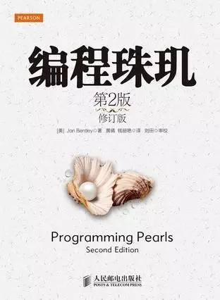
开篇
具体化你的解决的问题。下面是A和B的对话。
A：我该如何对磁盘文件进行排序？
B：需要排序的内容是什么？文件中有多少条记录？每个记录的格式是什么？
A：该文件包含至多10,000,000个记录，每条记录都是一个7位整数。
B：如果文件那么小，为什么要使用磁盘排序呢？为什么不在主存中对它排序？
A：该功能是某大型系统中的一部分，大概只能提供1MB主存给它。
B：你能将记录方面的内容说得更详细一些吗？
A：每个记录是一个7位正整数，没有其它的关联数据，每个整数至多只能出现一次。
... ...
经过一系统的问题，我们可以将一个定义模糊不清的问题变得具体而清晰：
输入：
所输入的是一个文件，至多包含n个正整数，每个正整数都要小于n，这里n=10^7。
如果输入时某一个整数出现了两次，就会产生一个致命的错误。
这些整数与其它任何数据都不关联。
输出：
以增序形式输出经过排序的整数列表。
约束：
大概有1MB的可用主存，但可用磁盘空间充足。运行时间至多允许几分钟，
10秒钟是最适宜的运行时间。
如果主存容量不是严苛地限制在1MB，比如说可以是1MB多，或是1~2MB之间， 那么我们就可以一次性将所有数据都加载到主存中，用Bitmap来做。 10,000,000个数就需要10,000,000位，也就是10,000,000b = 1.25MB。
程序可分为三个部分：第一，初始化所有的位为0；第二，读取文件中每个整数， 如果该整数对应的位已经为1，说明前面已经出现过这个整数，抛出异常，退出程序 (输入要求每个整数都只能出现一次)。否则，将相应的位置1；第三， 检查每个位，如果某个位是1，就写出相应的整数，从而创建已排序的输出文件。
如果主存容量严苛地限制在1MB，而使用Bitmap需要1.25MB， 因此无法一次载入完成排序。那么，我们可以将该文件分割成两个文件， 再分别用Bitmap处理。分割策略可以简单地把前一半的数据放到一个文件， 后一半的数据放到另一个文件，分别排序后再做归并。 也可以把文件中小于某个数(比如5,000,000)的整数放到一个文件，叫less.txt， 把其余的整数放到另一个文件，叫greater.txt。分别排序后， 把greater.txt的排序结果追加到less.txt的排序结果即可。
啊哈！算法
第2章围绕3个问题展开。
给定一个包含32位整数的顺序文件，它至多只能包含40亿个这样的整数， 并且整数的次序是随机的。请查找一个此文件中不存在的32位整数。 在有足够主存的情况下，你会如何解决这个问题？ 如果你可以使用若干外部临时文件，但可用主存却只有上百字节， 你会如何解决这个问题？
这是CTCI中的一道题目，详细解答请戳以下链接：
请猛戳我
请将一个具有n个元素的一维向量向左旋转i个位置。例如，假设n=8,i=3， 那么向量abcdefgh旋转之后得到向量defghabc。
这个问题很常见了，做3次翻转即可，无需额外空间：
reverse(0, i-1); // cbadefgh
reverse(i, n-1); // cbahgfed
reverse(0, n-1); // defghabc
给定一本英语单词词典，请找出所有的变位词集。例如，因为“pots”， “stop”，“tops”相互之间都是由另一个词的各个字母改变序列而构成的， 因此这些词相互之间就是变位词。
这个问题可以分3步来解决。第一步将每个单词按字典序排序， 做为原单词的签名，这样一来，变位词就会具有相同的签名。 第二步对所有的单词按照其签名进行排序，这样一来，变位词就会聚集到一起。 第三步将变位词分组，形成变位词集。示意图如下：
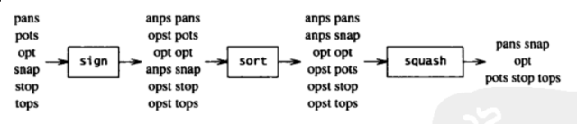
数据决定程序结构
恰当的数据视图实际上决定了程序的结构。 我们常常可以通过重新组织内部数据来使程序变得小而美。
发明家悖论：更一般性的问题也许更容易解决。(有时候吧)
程序员在节省空间方面无计可施时，将自己从代码中解脱出来， 退回起点并集中心力研究数据，常常能有奇效。数据的表示形式是程序设计的根本。
下面是退回起点进行思考时的几条原则：
使用数组重新编写重复代码。冗长的相似代码常常可以使用最简单的数据结构—— 数组来更好地表述。
封装复杂结构。当需要非常复杂的数据结构时，使用抽象术语进行定义， 并将操作表示为类。
尽可能使用高级工具。超文本，名字-值对，电子表格，数据库， 编程语言等都是特定问题领域中的强大的工具。
从数据得出程序的结构。在动手编写代码之前，优秀的程序员会彻底理解输入， 输出和中间数据结构，并围绕这些结构创建程序。
提到的书籍：Polya的《How to Solve it》，中文书《怎样解题》； Kernighan和Plauger的《Elements of Programming Style》；Fred Brooks的《人月神话》 Steve McConnell的《代码大全》；《Rapid Development》； 《Software Project Survival Guide》
编写正确的程序
本章以二分搜索为例子，讲述了如何对程序进行验证及正确性分析。
深入阅读：David Gries的《Science of Programming》 是程序验证领域里极佳的一本入门书籍。
编程中的次要问题
到目前为止，你已经做了一切该做的事：通过深入挖掘定义了正确的问题， 通过仔细选择算法和数据结构平衡了真正的需求，通过程序验证技术写出了优雅的代码， 并且对其正确性相当有把握。万事俱备，只欠编程。
使用断言assert
自动化测试程序
进阶阅读：《Practice of Programming》第5章(调试)，第6章(测试) 《Code Complete》第25章(单元测试)，第26章(调试)
程序性能分析
下图展示了一个程序的性能提升过程， 该程序的作用是对三维空间中n个物体的运动进行仿真。从图中可以看出， 一个程序可以从多方面进行性能提升，而其中算法和数据结构的选择又显得尤为重要。
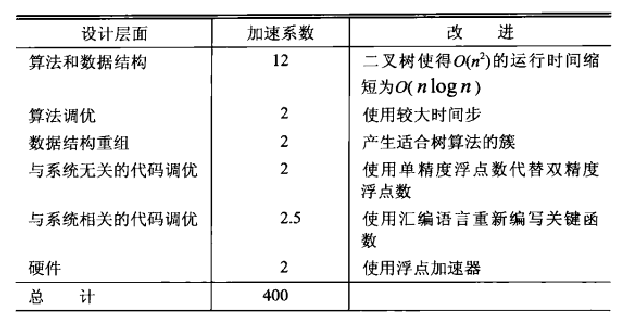
从设计层面提升程序性能：
1、问题定义。良好的问题定义可以有效减少程序运行时间和程序长度。
2、系统结构。将大型系统分解成模块，也许是决定其性能的最重要的单个因素。
3、算法和数据结构。这个不用说了。
4、代码调优。针对代码本身的改进。
5、系统软件。有时候改变系统所基于的软件比改变系统本身更容易。
6、硬件。更快的硬件可以提高系统的性能。
深入阅读：Butler Lampson的“Hints for Computer System Design”， 该论文特别适合于集成硬件和软件的计算机系统设计。
粗略估算
这一章讲述了估算技术，我认为是相当有用的一章。
文中先抛出一个问题：密西西比河一天流出多少水？如果让你来回答， 你会怎么答，注意不能去Google哦。
作者是这么回答这个问题：假设河的出口大约有1英里宽和20英尺深(1/250英里)， 而河水的流速是每小时5英里，也就是每天120英里。则可以计算出一天的流量：
1英里 * 1/250英里 * 120英里/天 约等于 1/2 英里^3/天
上述算式非常简单，可是在看到这些文字之前，如果有人真的问你， 密西西比河一天流出多少水？你真的能答上来吗？还是愣了一下后，摆摆手，说： 这我哪知道！
对于上面的问题，我们至少可以注意到以下两点：
你需要把问题转换成一个可计算的具体模型。这一点往往不需要太担心， 因为我们做的是估算，所以可以忽视很多无关紧要的因素，可以去简化你的模型， 记住我们要的只是一个粗略计算的结果。比如对于上面的问题， 计算密西西比河一天流出多少水其实就是计算其一天的流量，利用中学所学知识， 流量 = 截面积 x 流速，那我们就只需计算密西西比河的出水口的截面积和流速即可。 我们可以将出水口简化成一个矩形，因此就只需要知道出水口的宽和深即可。
你需要知道常识性的东西。上面我们已经把问题转换成了一个可计算的具体模型： 流量 = 出水口宽 x 出水口深 x 流速。接下来呢？你需要代入具体的数值去求得答案。 而这就需要你具备一些常识性的知识了。比如作者就估计了密西西比河的出口有1英里宽， 20英尺深(如果你估计只有几十米宽，那就相差得太离谱了)。 这些常识性的知识比第1点更值得关注，因为你无法给出一个靠谱的估算值往往是因为这点。
当我们懂得如何把一个问题具体化定义出来并为其选用适当的模型， 并且我们也积累了必要的常识性的知识后，回答那些初看起来无从下手的问题也就不难了。 这就是估算的力量。
以下是估算时的一些有用提示：
两个答案比一个答案好。即鼓励你从多个角度去对一个问题进行估算， 如果从不同角度得到的答案差别都不大，说明这个估算值是比较靠谱的。
快速检验。即量纲检验。即等式两边最终的量纲要一致。 这一点在等式简单的时候相当显而易见。比如位移的单位是米，时间单位是秒， 速度单位是米/秒，那显然我们应该要用位移去除以时间来得到速度， 这样才能保证它们单位的一致。你可能会说，我了个去，这种小学生都懂的事， 你好意思拿出来讲。其实不然，当你面对的是一个具有多个变量的复杂物理公式， 或者你提出某种物理假设，正在考虑将其公式化，该方法可以切切实实地帮你做出检验。
经验法则。“72法则”：1.假设以年利率r%投资一笔钱y年，如果r*y = 72， 那么你的投资差不多会翻倍。2.如果一个盘子里的菌群以每小时3%的速率增长， 那么其数量每天(24小时)都会翻倍。在误差不超过千分之五的情况下， \pi秒就是一个纳世纪。也就是说：
3.14秒 = 10^(-9) * 100年 = 10^(-7) 年
也就是说，1年大概是3.14x10^7 秒。所以如果有人告诉你，一个程序运行10^7 秒， 你应该能很快反应出，他说的其实是4个月。
实践。与许多其他活动一样，估算技巧只能通过实践来提高。
如果问题的规模太大，我们还可以通过求解它的小规模同质问题来做估算。比如， 我们想测试某个程序运行10亿次需要多长时间，如果你真去跑10亿次， 说不定运行几个小时都没结束，那不是很悲剧？我们可以运行这个程序1万次或是10万次， 得出结果然后倍增它即可。当然，这个结果未必是准确的， 因为你没法保证运行时间是随着运行次数线性增加的。谨慎起见，我们可以运行不同的次数， 来观察它的变化趋势。比如运行10次，100次，1000次，10000次等， 观察它的运行时间是否是线性增加的，或是一条二次曲线。
有时候，我们需要为估算的结果乘上一个安全系数。比如， 我们预估完成某项功能需要时间t，那根据以往经验，也许我们需要为这个值乘上2或4， 这样也许才是一个靠谱的预估值。
Little定律：系统中物体的平均数量等于物体离开系统的平均速率和每个物体在系统中停留 的平均时间的乘积。(如果物体离开和进入系统的总体出入流是平衡的， 那么离开速率也就是进入速率)
举个例子，比如你正在排除等待进入一个火爆的夜总会， 你可以通过估计人们进入的速率来了解自己还要等待多长时间。根据Little定律， 你可以推论：这个地方可以容纳约60人，每个人在里面逗留时间大约是3小时， 因此我们进入夜总会的速率大概是每小时20人。现在队伍中我们前面还有20人， 也就意味着我们还要等待大约一个小时。
深入阅读：Darrell Huff的《How To Lie With Statistics》；关键词： 费米近似(Fermi estimate, Fermi problem)
算法设计技术
这一章就一个小问题研究了4种不同的算法，重点强调这些算法的设计技术。 研究的这个小问题是一个非常常见的面试题：子数组之和的最大值。 如果之前没有听过，建议Google之。
深入阅读：Aho,Hopcroft和Ullman的《Data Structures and Algorithms》 Cormen,Leiserson,Rivest和Stein的《Introduction to Algorithms》
代码调优
前面各章讨论了提高程序效率的高层次方法：问题定义，系统结构， 算法设计及数据结构选择。本章讨论的则是低层次的方法：代码调优。
代码调优的最重要原理就是尽量少用它。不成熟的优化是大量编程灾害的根源。 它会危及程序的正确性，功能性以及可维护性。当效率很重要时， 第一步就是对系统进行性能监视，以确定其运行时间的分布状况。 效率问题可以由多种方法来解决，只有在确信没有更好的解决方案时才考虑进行代码调优。
事实上，如果不是十分十分必要，不要去做代码调优， 因为它会牺牲掉软件的其他许多性质。
so，just skip this chapter。
节省空间
本章讲述了节省空间的一些重要方法。
减少程序所需数据的存储空间，一般有以下方法：
不存储，重新计算。
稀疏数据结构。下面着重讲一下这点。
数据压缩。可以通过压缩的方式对对象进行编码，以减少存储空间。
分配策略。只有在需要的时候才进行分配。
垃圾回收。对废弃的存储空间进行回收再利用。
以下是节省代码空间的几种通用技术：
函数定义。用函数替换代码中的常见模式可以简化程序，同时减少代码的空间需求。
解释程序。用解释程序命令替换长的程序文本。
翻译成机器语言。可以将大型系统中的关键部分用汇编语言进行手工编码。
稀疏数据结构
假设我们有一个200 x 200的矩阵(共40000个元素)，里面只有2000个元素有值， 其它的都为0，示意图如下：
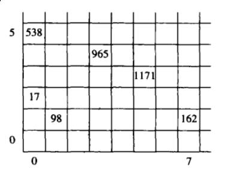
显然这是一个稀疏矩阵，直接用一个200 x 200 的二维数组来存储这些数据会造成大量的空间浪费，共需要200x200x4B=160KB。 所以，我们应该想办法用另一种形式来存储这些数据。
方法一
使用数组表示所有的列，同时使用链表来表示给定列中的活跃元素。 如下图所示：
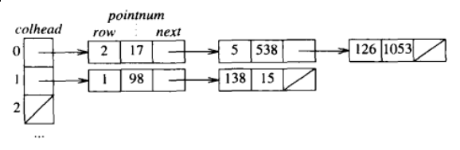
该结构中，有200个指针(colhead)和2000条记录(每条记录是两个整数和一个指针)， 占用空间是200x4B + 2000x12B = 24800B = 24.8KB， 比直接用二维数组存储(160KB)要小很多。
方法二
我们可以开三个数组来保存这些数，如下图所示：
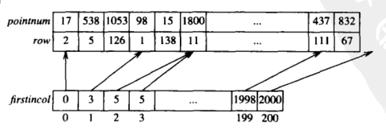
firstincol是一个长度为201的数组，对于第i列，在数组row中， 下标为firstincol[i]到firstincol[i+1]-1对应的行元素非0， 其值存储在相应的pointnum数组中。
比如对于上图，在第0列中，元素值非0的行有3行，分别是row[0],row[1],row[2], 元素值是pointnum[0],pointnum[1],pointnum[2]；在第1列中，元素值非0的行有2行， 分别是row[3],row[4]，元素值是pointnum[3],pointnum[4]。依次类推。
该结构所需要的存储空间为2x2000x4B + 201x4B = 16804B = 16.8KB。 由于row数组中的元素全部都小于200，所以每个元素可以用一个unsigned char来保存， firstincol数组中元素最大也就2000，所以可以用一个short(或unsigned short)来保存， pointnum中的元素是一个4B的int， 最终所需空间变为：2000x4B + 2000x1B + 201x2B = 10402B = 10.4KB。
深入阅读：Fred Brooks的《人月神话》
排序
本章先简单介绍了插入排序，然后着重讲述快速排序。
插入排序
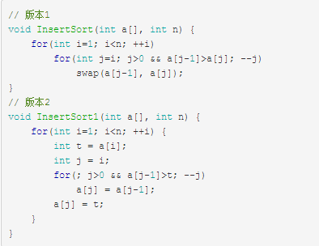
快速排序
我们在这里规定：小于等于pivot的元素移到左边，大于pivot的元素移到右边。
实现1：单向移动版本
这个版本的关键是设置一快一慢两个指针，慢指针左侧都是小于等于pivot(包含慢指针所在位置)， 慢指针到快指针之间的值是大于pivot，快指针右侧的值是还未比较过的。示意图如下：
小于等于pivot ｜ 大于pivot ｜ ？
slow fast
快指针一次一步向前走，遇到大于pivot什么也不做继续向前走。遇到小于等于pivot的元素， 则慢指针slow向前走一步，然后交换快慢指针指向的元素。一次划分结束后， 再递归对左右两侧的元素进行快排。代码如下：
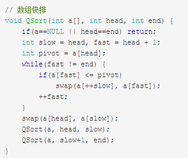
排序数组a只需要调用QSort(a, 0, n)即可。该思路同样可以很容易地在链表上实现：
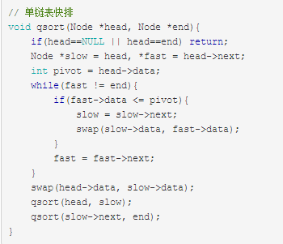
排序头指针为head的单链表只需调用qsort(head, NULL)即可。
实现2：双向移动版本
版本1能能够快速完成对随机整数数组的排序，但如果数组有序， 或是数组中元素相同，快排的时间复杂度会退化成O(n^2 )，性能变得非常差。
一种缓解方案是使用双向移动版本的快排，它每次划分也是使用两个指针， 不过一个是从左向右移动，一个是从右向左移动，示意图如下：
小于等于pivot ｜ ？ ｜ 大于pivot
i j
指针j不断向左移动，直到遇到小于等于pivot，就交换指针i和j所指元素 (指针i一开始指向pivot)；指针i不断向右移动，直到遇到大于pivot的， 就交换指针i和j所指元素。pivot在这个过程中，不断地换来换去， 最终会停在分界线上，分界线左边都是小于等于它的元素，右边都是大于它的元素。 这样就避免了最后还要交换一次pivot的操作，代码也变得美观许多。
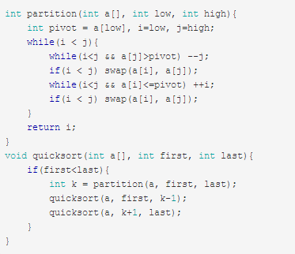
当然，如果对于partition函数，你如果觉得大循环内的两个swap还是做了些无用功的话， 也可以把pivot的赋值放到最后一步，而不是在这个过程中swap来swap去的。代码如下：

如果数组基本有序，那随机选择pivot(而不像上面那样选择第一个做为pivot) 会得到更好的性能。在partition函数里，我们只需要在数组中随机选一个元素， 然后将它和数组中第一个元素交换，后面的划分代码无需改变， 就可以达到随机选择pivot的效果。
进一步优化
对于小数组，用插入排序之类的简单方法来排序反而会更快，因此在快排中， 当数组长度小于某个值时，我们就什么也不做。对应到代码中， 就是修改quicksort中的if条件：
if(first < last) 改为 if(last-first > cutoff)
其中cutoff是一个小整数。程序结束时，数组并不是有序的， 而是被组合成一块一块随机排列的值，并且满足这样的条件： 某一块中的元素小于它右边任何块中的元素。我们必须通过另一种排序算法对块内进行排序。 由于数组是几乎有序的，因此插入排序比较适用。
这种方法结合了快排和插入排序，让它们去做各自擅长的事情，往往比单纯用快排要快。
深入阅读：Don Knuth的《The Art of Computer Programming, Volume 3: Sorting and Searching》；Robert Sedgewick的《Algorithms》； 《Algorithms in C》,《Algorithms in C++》,《Algorithms in Java》。
取样问题
本章讲述了一个小的随机抽样问题，并用不同的方法来解决它。
问题：对于整数m和n，其中m<n，输出0~n-1范围内m个随机整数的有序列表， 不允许重复。
比如m=3, n=5，那么一种可能输出是0，2，3(要求有序)。实现1来自Knuth的TAOCP， 时间复杂度O(n)：
void GenKnuth(int m, int n) {
for(int i=0; i<n; ++i) {
if((bigrand()%(n-i)) < m) {
cout<<i<<endl;
--m;
}
}
}
其中，bigrand()的作用是返回一个很大的随机整数。
实现2：在一个初始为空的集合里面插入随机整数，直到个数足够。代码如下：
void GenSets(int m, int n) {
set<int> s;
while(s.size() < m)
s.insert(bigrand() % n);
set<int>::iterator i;
for(i=s.begin(); i!=s.end(); ++i)
cout<<*i<<endl;
}
实现3：把包含整数0～n-1的数组顺序打乱，然后把前m个元素排序输出。 该方法的性能通常不如Knuth的算法。代码如下：
void GenShuf(int m, int n) {
int x[n];
for(int i=0; i<n; ++i)
x[i] = i;
for(int i=0; i<m; ++i) {
int j = randint(i, n-1);
swap(x[i], x[j]);
}
sort(x, x+m);
for(int i=0; i<m; ++i)
cout<<x[i]<<endl;
}
深入阅读：Don Knuth的《The Art of Computer Programming, Volume 2: Seminumerical Algorithms》
搜索
本章详细研究这样一个搜索问题：在没有其他相关数据的情况下，如何存储一组整数？ 为些介绍了5种数据结构：有序数组，有序链表，二叉搜索树，箱，位向量。
其中，二叉搜索树应该熟练掌握，以下是一种实现：
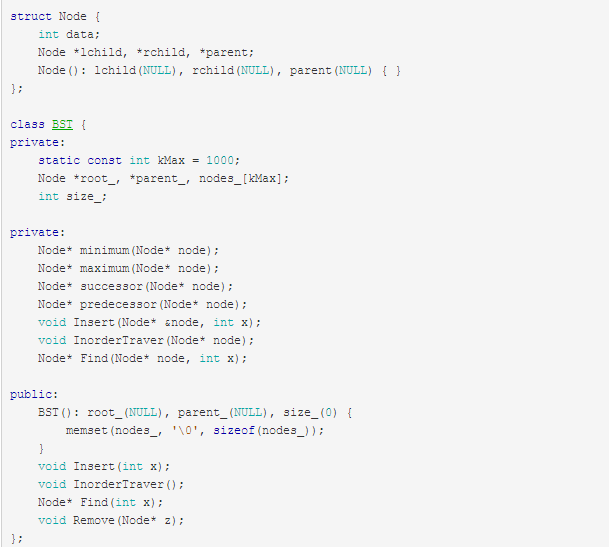
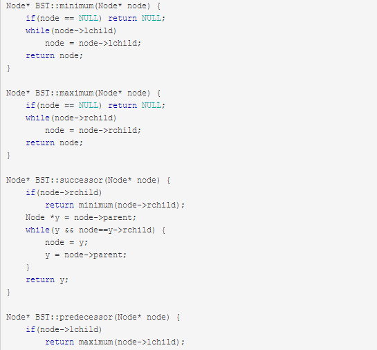
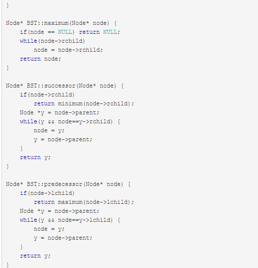
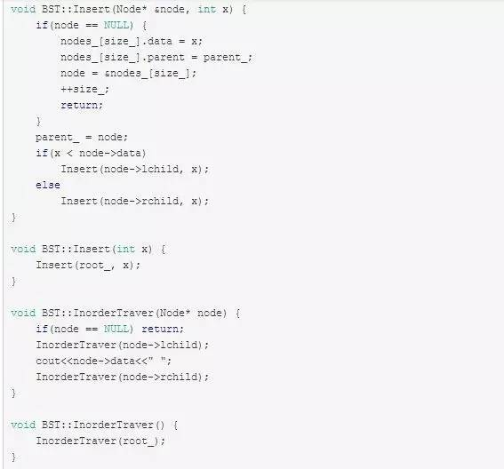
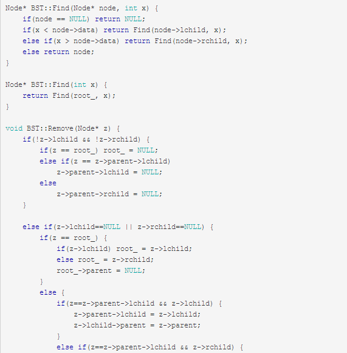
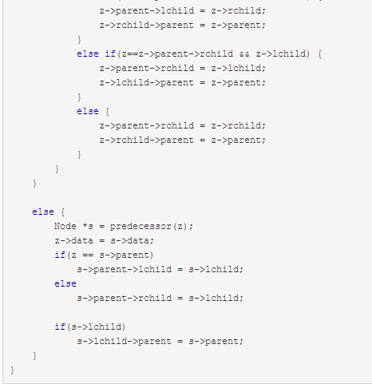
堆
本章主要介绍堆，下面是关于堆的一些主要操作：
// 最大堆实现, 数组下标从1开始，a[0]不使用。
// 交换两数
void swap(int &a, int &b) {
int t = a;
a = b;
b = t;
}
// 把第i个元素向上移动
void ShiftUp(int a[], int i) {
while(i>1 && a[i]>a[i/2]) {
swap(a[i], a[i/2]);
i >>= 1;
}
}
// 把第i个元素向下移动
void ShiftDown(int a[], int n, int i) {
while((i=2*i) <= n) {
if(i+1<=n && a[i+1]>a[i]) ++i;
if(a[i] > a[i/2]) swap(a[i], a[i/2]);
else break;
}
}
// 把数组a变成具备最大堆性质的数组
void MakeHeap(int a[], int n) {
for(int i=n/2; i>0; --i)
ShiftDown(a, n, i);
}
// 向堆中插入元素x
void Insert(int a[], int &n, int x) {
a[++n] = x;
ShiftUp(a, n);
}
// 删除堆中第i个元素
void Del(int a[], int &n, int i) {
a[i] = a[n--];
if(i>1 && a[i]>a[i/2]) ShiftUp(a, i);
else ShiftDown(a, n, i);
}
// 堆排序，时间复杂度O(nlogn)
void HeapSort(int a[], int n) {
MakeHeap(a, n);
for(int i=n; i>1; --i) {
swap(a[i], a[1]);
ShiftDown(a, i-1, 1);
}
}
字符串
程序1：循环输入并将每个单词插入集合S(忽略重复单词)，然后排序输出。
int main(void) {
set<string> s;
set<string>::iterator j;
string t;
while(cin >> t)
s.insert(t);
for(j=s.begin(); j!=s.end(); ++j)
cout<<*j<<endl;
return 0;
}
程序2：单词计数
int main(void) {
map<string, int> m;
map<string, int>::iterator j;
string t;
while(cin >> t)
m[t]++;
for(j=m.begin(); j!=m.end(); ++j)
cout<<j->first<<" "<<j->second<<endl;
return 0;
}
程序3：建立自己的哈希表(散列表)，以下是一种实现：
class Hash {
public:
Hash(): seed_(131), size_(0) {
memset(head_, 0, sizeof(head_));
}
void Insert(const char* str) {
unsigned int id = hash(str);
char *dst = (char*)node_[size_].word;
while(*dst++ = *str++);
node_[size_].next = head_[id];
head_[id] = &node_[size_];
++size_;
}
bool Find(const char* str) {
unsigned int id = hash(str);
for(Node* p=head_[id]; p; p=p->next) {
char* dst = (char*)p->word;
int i = 0;
for(; *(str+i) && *(str+i)==*(dst+i); ++i);
if(!*(str+i) && !*(dst+i)) return true;
}
return false;
}
private:
unsigned int hash(const char* str) {// BKDR Hash Function
unsigned int hash = 0;
while(*str) {
hash = hash * seed_ + (*str++);
}
return (hash & 0x7FFFFFFF) % kHashSize;
}
private:
unsigned int seed_;
unsigned int size_;
static const int kWordSize = 26 + 1;
static const int kNodeSize = 20000;
static const int kHashSize = 10001;
struct Node {
char word[kWordSize];
Node *next;
};
Node node_[kNodeSize];
Node* head_[kHashSize];
};
后缀数组
假设我们有以下字符串及一个char*数组：
char c[20] = "hawstein";
char* pc[20];
我们让指针pc[i]指向字符串的第i个字符，即：
for(int i=0; i<8; ++i)
pc[i] = &c[i];
这时候我们输出pc[i]，会得到字符串”hawstein”的所有后缀：
hawstein
awstein
wstein
stein
tein
ein
in
n
然后，我们对数组pc进行排序，将所有后缀按字典序排序：
sort(pc, pc+8, cmp);
其中，比较函数cmp如下：
inline bool cmp(char* p, char*q) {
return strcmp(p, q) < 0;
}
这时，我们再输出pc[i]，会得到排序后的结果：
awstein
ein
hawstein
in
n
stein
tein
wstein
我们把数组pc称为“后缀数组”。这里需要注意，数组pc 中存储的是指向每个后缀首字符的地址。我们也可以存储每个后缀首字符在原数组中的下标， 效果是一样的。
本章中用后缀数组解决了一个小问题：可重叠最长重复子串。比如对于字符串”banana”， 其后缀数组为：
a
ana
anana
banana
na
nana
扫描一次数组，比较相邻子串，找到相邻子串的最长公共前缀即可。本例为”ana”， 其中一个a是重叠的。
后缀数组是处理字符串的有力工具，常见的两种实现方法是：倍增算法和DC3算法。 推荐阅读以下材料来学习后缀数组：
许智磊，《后缀数组》
罗穗骞，《后缀数组——处理字符串的有力工具》
●本文编号1566，以后想阅读这篇文章直接输入1566即可。
●本文分类“算法”、“书籍”搜索分类名可以获得相关文章。
●输入m可以获取到文章目录
程序员的那点事↓↓↓
算法与数据结构↓↓↓

更多推荐请看《15个技术类公众微信》
涵盖：程序人生、算法与数据结构、黑客技术与网络安全、大数据技术、前端开发、Java、Python、Web开发、安卓开发、iOS开发、C/C++、.NET、Linux、数据库、运维等。传播计算机学习经验、推荐计算机优秀资源：点击前往《值得关注的15个技术类微信公众号》
![]()